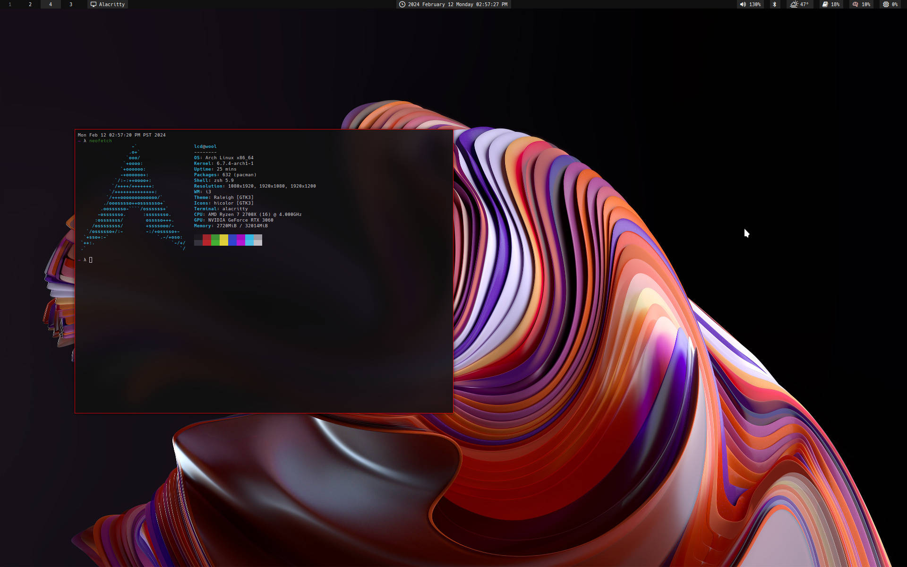

This is Tux, the mascot of Linux.
I like to use Linux because it forces me to learn more about computers. I also like the customizability that's allowed with Linux, and how I can make my computer look however I want. I also like using Vim, and Linux is conductive to that.
I use Arch Linux, because I like the hands-on experience of the installation, and how it doesn't do things for you. I tried using Debian Testing after 5 years of using Arch, and was astonished by the lack of features on packages I use, that I had assumed were standard across all Linux distributions, such as NVENC encoding on OBS, or out-of-the-box VirtualBox support.
This is a screenshot of my Arch Linux desktop, with an Alacritty terminal running Neofetch.